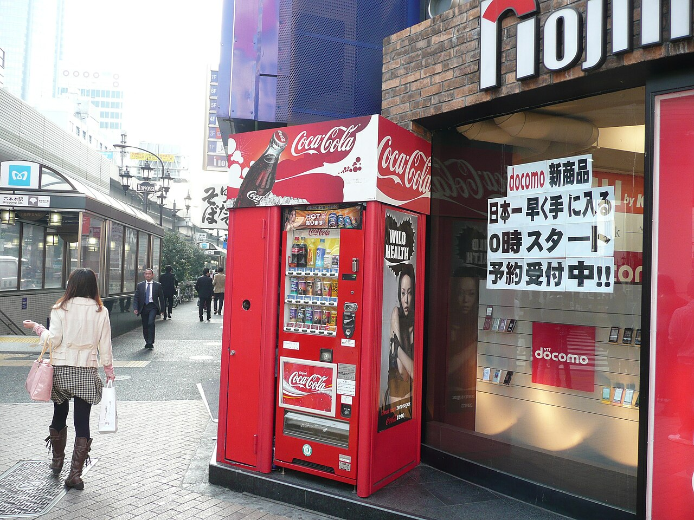
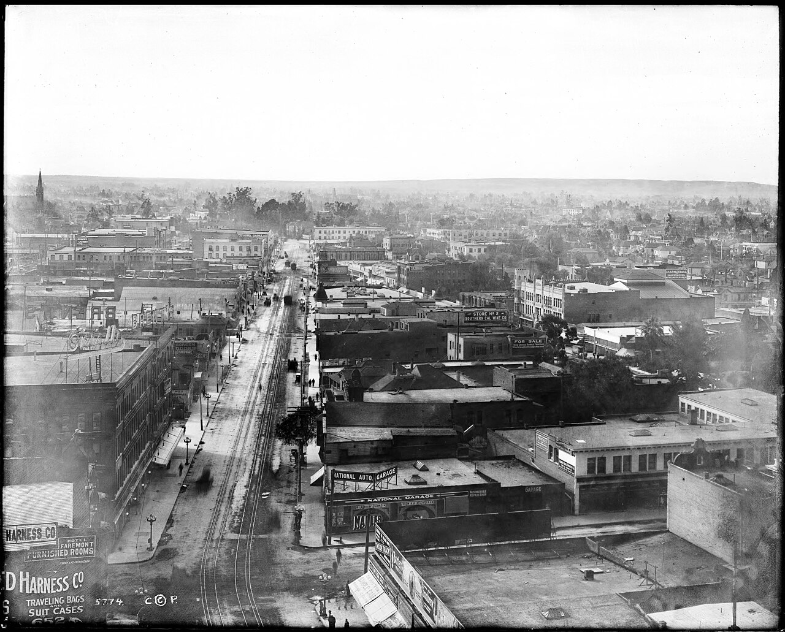
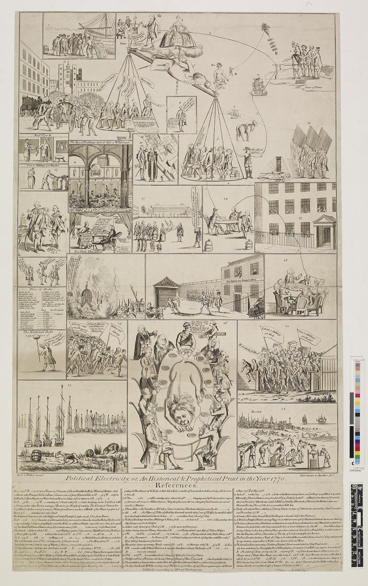

#001 · horizontal · 1280x853 · CC BY 2.0 · Wikimedia Commons File:Dreams and a Slice of New York (5907692204).jpg · shopping bags paper hands · Alex Proimos from Sydney, Australia https://commons.wikimedia.org/wiki/File:Dreams_and_a_Slice_of_New_York_(5907692204).jpg

#002 · horizontal · 1280x960 · CC BY 2.0 · Wikimedia Commons File:Frisdrank automaat bij de vestiging van elektronica-winkelketen Nojima te Roppongi 7-chōme in Tokio, -9 november 2009.jpg · shopping bags paper hands · Christian Heilmann https://commons.wikimedia.org/wiki/File:Frisdrank_automaat_bij_de_vestiging_van_elektronica-winkelketen_Nojima_te_Roppongi_7-ch%C5%8Dme_in_Tokio,_-9_november_2009.jpg

#003 · horizontal · 1280x1031 · Public domain · Wikimedia Commons File:Panoramic view of Los Angeles, looking south from the Pacific Electric building, with Main Street and 7th Street in view, January 1, 1907 (CHS-5774).jpg · shopping bags paper hands · Unknown authorUnknown author https://commons.wikimedia.org/wiki/File:Panoramic_view_of_Los_Angeles,_looking_south_from_the_Pacific_Electric_building,_with_Main_Street_and_7th_Street_in_view,_January_1,_1907_(CHS-5774).jpg#004 · vertical · 1142x1600 · CC0 · Wikimedia Commons File:Captain H.C. Gray Balloon Basket - DPLA - bab59faf69932dc71a2a98720256a9ed (page 1).jpg · person carrying paper shopping bags · https://commons.wikimedia.org/wiki/File:Captain_H.C._Gray_Balloon_Basket_-_DPLA_-_bab59faf69932dc71a2a98720256a9ed_(page_1).jpg
#006 · vertical · 1200x1600 · CC0 · Wikimedia Commons File:非耐久財 家事用消耗品 (52479950072).jpg · person carrying paper shopping bags · DLKR from Tokyo, Japan https://commons.wikimedia.org/wiki/File:%E9%9D%9E%E8%80%90%E4%B9%85%E8%B2%A1_%E5%AE%B6%E4%BA%8B%E7%94%A8%E6%B6%88%E8%80%97%E5%93%81_(52479950072).jpg

#007 · vertical · 1007x1600 · Public domain · Wikimedia Commons File:Political electricity; or, an historical & prophetical print in the year 1770. (BM 1868,0808.4445).jpg · woman shopping bags street · https://commons.wikimedia.org/wiki/File:Political_electricity;_or,_an_historical_%26_prophetical_print_in_the_year_1770._(BM_1868,0808.4445).jpg